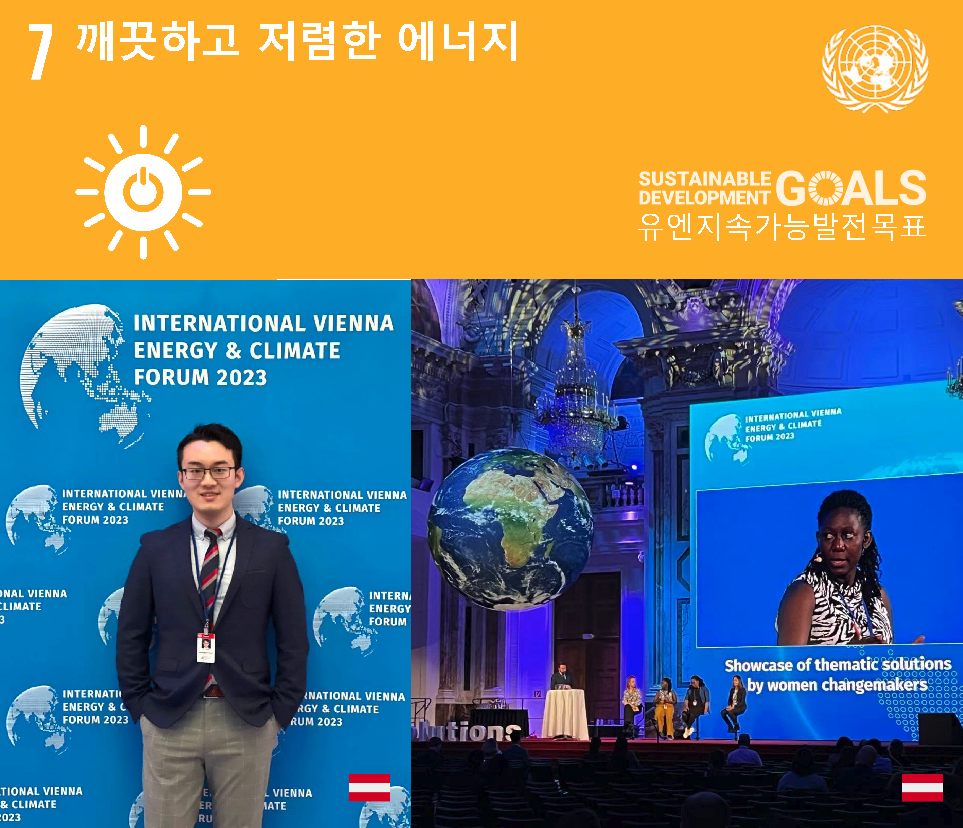
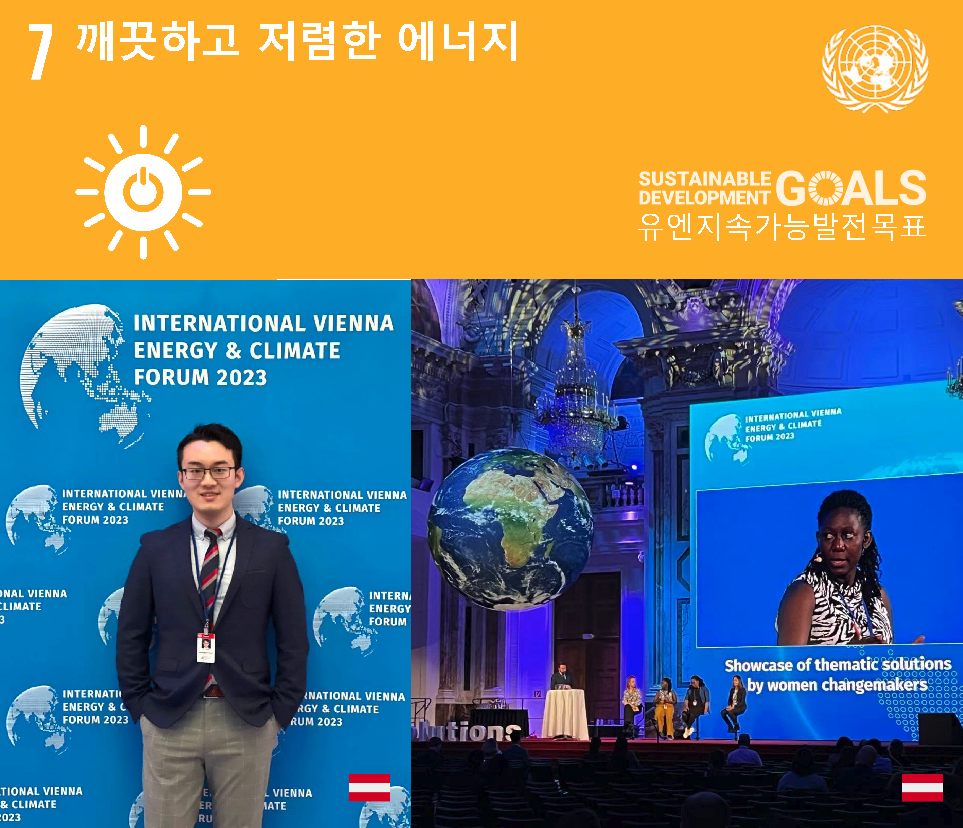

독일 함부르크
독일 함부르크 프랑스 파리
프랑스 파리 스위스 취리히
스위스 취리히 중국 베이징
중국 베이징 미국 워싱턴 D.C.
미국 워싱턴 D.C. 안녕하세요！
에서 온 친구들을 환영합니다 :-)

에서 온 친구들을 환영합니다 :-) 현재, 쉬홍 ( 세) 홍서는 옥스퍼드 에너지 연구소에서 방문 연구원으로 재직 중이며 중유럽 수소 전략 및 경제 연구에 전념하고 있으며, 에너지와 교통 분야에서 탄소 중립을 실현하기 위해 노력하고 있습니다. 또한 유엔 본 클라임트 컨퍼런스에서 "중국 에너지 전환과 기술 혁신" 주제의 세션을 주최하였으며 유엔 유럽 경제위원회 내륙 교통 및 기후 변화 전문가 그룹 회의에 참석한 경험이 있습니다. 학위 과정 중에 해외 기업 및 중유럽 학술 기관과 협력하여 제1 저자 및 공동 저자로 논문 10 편 이상을 발표하고 다수의 특허를 획득하였습니다. 동시에 그는 에너지와 교통 분야에서 고영향 저널의 심사자로 활동하고 있으며, 세인트 갈렌 국제 경제 포럼의 학술 심사원 역시 맡고 있습니다. 그는 미국 화학 협회 논문 초청 및 여행 상, 인텔 엣지 AI 장학금, EU 에라스무스 장학금 등을 수상한 경력이 있습니다.
그는 2021년 초에 취리히 연방 공과대학교에서 박사 학위를 받았으며, 석사 학위는 뮌헨 공과대학교에서 취득하였습니다. 학위 과정 중에는 탄소 중립/신 에너지 분야에 집중하였으며 스위스 연방 폴셰러 연구소, 유럽 X선 전자 레이저와 같은 국제 연구 기관, 그리고 일본 토요타 자동차, 독일 인피니온 테크놀로지, 독일 프로이덴베르크 그룹 등의 글로벌 기업과 깊은 연구 협력을 진행하였습니다. 또한 미국의 퀀틱 비즈니스 스쿨에서 전액 장학금을 받아 원격으로 MBA 학위를 취득한 경험이 있으며, 케임브리지 대학교 제지 비즈니스 스쿨에서 "그린 트랜스포메이션" 기업 경영 강의를 수강하였으며, 주요 증권 연구 기관 (A 주식 및 미국 주식)에서 개별 주식 및 산업 연구 보고서를 작성하였으며 이중 통화 펀드 (시드 라운드➔A 라운드)에서 신 에너지 분야의 벤처 투자를 수행한 경험이 있습니다.
PEK (NǐHǎo)-> CDG (Bonjour)-> HAM (MoinMoin)-> MUC (Servus)-> ZRH (Grüezi)-> NEXT?

지속 가능한 개발 목표 2030
 


교육
- 2017-2021 | 박사, 신재생 에너지 기술
스위스 · 취리히 연방 공과대학 (직무제/전액 장학금)
- 2014-2016 | 석사, 재료 과학/물리학
독일 · 뮌헨 공과대학 (EU/EM 장학금)
- 2009-2013 | 학사, 재료 화학
중국 · 북경 교통대학 (특허 획득)
- 2023-현재 | 방문 학자, 에너지 경제 및 정책
영국 · 옥스퍼드 에너지 연구소 (싱크탱크/Fellow)
- 2023-2023 | 경영 교육 과정, 녹색 전환
영국 · 케임브리지 대학교 비즈니스 스쿨 (산탄데르 은행 장학금)
- 2019-2021 | MBA, 경영 관리/지속 가능한 발전
미국 · 콴틱 비즈니스 스쿨 (전액 장학금/Fellow)
____
연구 관심사
- 재생 에너지, 수소, 연료전지, 전해질, 태양광, 배터리
- 에너지 경제학, 에너지 정책, ESG 투자, 지속 가능성
- 기능성 물질, 반도체, 폴리머, 금속 산화물
- 컴퓨터 비전, X선 기술, 컴퓨터 비전
- 주식 연구, 빅데이터 분석, 비즈니스 분석
학업 서비스
- 동료 검토자:
- 파워 소스 학술지 (IF=9.13, 2022)
- 국제 수소 에너지 학술지 (IF=7.14, 2021)
- 지속가능한 에너지 학술지 (IF=5.76, 2021)
- 열 및 질량 전달 국제 학술지 (IF=5.58, 2022)
- 녹색 기술 및 지속가능성 학술지 (새로운 학술지, 2022)
- 녹색 에너지 및 지능형 교통 학술지 (새로운 학술지, 2022)
- 조교:
- 재생 에너지 기술 II(석사 과정, 취리히 연방 공과대학교, 2017-2019)
- 연구원:
- 수소 및 연료 전지(에너지환경사업부, 폴 셰러 연구소, 스위스, 2016-2021)
- 고분자 센서 (물리학과, 뮌헨 공과 대학, 독일, 2015-2016)
- 태양전지 및 리튬전지 (과학 학교, 베이징 교통 대학, 중국, 2012-2013)
- 조직:
- 전기화학학회 초청논문/수상비자 (2019, USA)
- 국제전기화학학회 회원 (2019, IT)
- 독일 물리학회 회원 (2016, DE)
간행물
- 청정에너지기술 / 전기화학
-
S. N. Artigas, H. Xu* [FDB], F. Mack
Use of distribution of relaxation times analysis as an in-situ diagnostic tool for water management in PEM fuel cells applications [J]
2024 | J. Power Sources [PDF][프로이덴베르크] [새로운!] -
H. Xu* [PSI], M. Bührer, F. Marone, Prof. T. J. Schmidt, F. N. Büchi, J. Eller
Effects of gas diffusion layer substrates on PEFC water management: Part II. In situ liquid water desaturation via evaporation [J]
2022 | J. Electrochem. Soc. [PDF][SLS] -
H. Xu* [PSI], S. Nagashima [토요타], H. Nguyen, K. Kishita, F. Marone, F. N. Büchi, J.
Eller [PSI]
Temperature dependent water transport mechanism in PEFC gas diffusion layers revealed by subsecond operando X-ray tomographic microscopy. [J]
2021 | J. Power Sources [PDF][SLS] [토요타] -
H. Xu* [PSI], M. Bührer, F. Marone, Prof. T. J. Schmidt [ETH], F. N. Büchi, J. Eller
[PSI]
Effects of gas diffusion layer substrates on PEFC water management: Part I. Operando liquid water saturation and gas diffusion properties [J]
2021 | J. Electrochem. Soc. [PDF][SLS] -
C. Csoklich, H. Xu* [PSI], F. Marone, Prof. T. J. Schmidt [ETH], F. N. Büchi [PSI]
Laser Structured Gas Diffusion Layers for Improved Water Transport and Fuel Cell Performance [J]
2021 | ACS Appl. Energy Mater. [링크][SLS] -
S. van Rooij, M. Magnini, A. Mularczyk, H. Xu* [PSI], F. N. Büchi [PSI], Prof. S. Haussener
[EPFL]
Conductive heat transfer in partially saturated gas diffusion layers with evaporative cooling [J]
2022 | J. Electrochem. Soc. [PDF][SLS] [EPFL] -
Y. Nagai [토요타], J. Eller, T. Hatanaka, S. Yamaguchi, S. Kato, A. Kato, F. Marone, H.
Xu*
[PSI], F. N. Büchi.
Improving water management in fuel cells through microporous layer modifications: Fast operando tomographic imaging of liquid water. [J]
2019 | J. Power Sources [링크][SLS] [토요타]
- 전산영상 / 딥러닝
-
M. Bührer, H. Xu* [PSI], A. Hendriksend, F. N. Büchi, J. Eller, Prof. M. Stampanoni [ETH],
F. Marone [SLS]
Deep learning based classification of dynamic processes in time-resolved XTM [J]
2021 | Scientific Reports [PDF][SLS] [CWI 암스테르담] -
M. Bührer, H. Xu* [PSI], J. Eller, J. Sijbers, Prof. M. Stampanoni [ETH], F. Marone
[SLS]
Unveiling water dynamics in fuel cells from time-resolved tomographic microscopy data [J]
2021 | Scientific Reports [PDF][SLS] [앤트워프대학] -
H. Xu* [PSI], M. Bührer, F. Marone, Prof. T. J. Schmidt [ETH], F. N. Büchi, J. Eller
[PSI]
Optimal image denoising for operando XTM of liquid water in PEFC gas diffusion layers. [J]
2020 | J. Electrochem. Soc. [PDF][SLS] -
H. Xu* [PSI], F. Marone, S. Nagashima [토요타], H. Nguyen, K. Kishita, F. N. Büchi, J.
Eller [PSI]
(Invited) Exploring sub-second and sub-micron XTM imaging of liquid water in PEFC GDLs.[J]
2019 | ECS Transactions [PDF][SLS] [토요타] [ECS Travel Grant] -
H. Xu* [PSI], M. Bührer, F. Marone, Prof. T. J. Schmidt [ETH], F. N. Büchi, J. Eller
[PSI]
Fighting the noise: towards the limits of subsecond X-ray tomographic microscopy of PEFC. [J]
2017 | ECS Transactions [링크][SLS] [ModVal Poster Award]
- 재료과학 / 화학공학
-
Prof. H. Zhang, R. Wu, H. Xu* [BJTU], F. Li, S. Wang, J. Wang [BJUT], T. Zhang
A simple spray reaction synthesis and characterization of hierarchically porous SnO2 microspheres for an enhanced dye sensitized solar cell. [J]
2017 | RSC Advances [링크][BJTU] -
Prof. H. Zhang [BJTU], H. Xu* [BJTU], J. Wan, Prof. L. Yan, C. Dai
Preparations of new porous oxides spherical powders by spray reaction technique.[J]
2012 | Vacuum & Cryogenics [링크(중국어)][BJTU] -
X. Qi, H. Xu* [BJTU], X. Zhou
Degradation of highly active cypermethrin via ultrasonic irradiation combined with TiO2 photocatalysis.[J]
2012 | Chem. Res. [링크(중국어)][BJTU]
특허
-
Annular gas-liquid interface jigging magnetic separation device [P]
발명가: Prof. M. Fu, Prof. H. Zhang, H. Xu (BJTU), Prof. L. Yan
중국 특허 번호: CN102441489B, Oct 11, 2013. [Grant] -
Continuously operating annular gas-liquid interface jigging magnetic separation device
[P]
발명가: Prof. H. Zhang, H. Xu (BJTU), Prof. M. Fu, Prof. L. Yan
중국 특허 번호: CN102441490A, Nov 1, 2013. [Grant] -
Ultrasonic-photocatalytic oxidation coupled fruit and vegetable cleaning device [P]
발명가: X. Zhou, H. Xu (BJTU), Prof. H. Jiang, X. Qi
중국 특허 번호: CN202311136U, May 9, 2012. [Grant]
논문
-
H. Xu [ETH], Prof. T. J. Schmidt (examiner), Prof. M. Stampanoni (co-examiner), Dr. J.
Eller (advisor)
Subsecond Operando X-ray Tomographic Microscopy of Liquid Water in Polymer Electrolyte Fuel Cells [D]
박사 논문. 과학 박사. 취리히 연방 공과대학교, 스위스 취리히, 2021년. [PDF] -
H. Xu [TUM], Prof. P. Müller-Buschbaum (examiner), Prof. W. Schmahl (co-examiner), Dr. E.
Metwalli
Structure & Properties of Thermoresponsive DBC Embedded with Metal Oxide Nanoparticles. [D]
석사 논문. 과학의 마스터. 뮌헨 대학교 및 뮌헨 공과 대학교, 독일 뮌헨, 2016년. [PDF] -
H. Xu [BJTU], Prof. H. Zhang (examiner)
Application of Mesoporous SnO2 Materials in Dye-sensitized Solar Cells and Lithium Batteries. [D]
학사 학위 논문. 과학 학사. 베이징 교통 대학, 베이징, 중국, 2013년. [PDF]
박사 학위 수여식
조교 · 조교
-
재생 에너지 기술 II, 에너지 저장 및 변환
취리히 연방 공과대학교, 석사 과정 (529-0191-01L)
2017-2019 | 봄 학기 [Link]
컨퍼런스
-
H. Xu [PSI], M. Bührer, F. Marone, T. J. Schmidt, F. N. Büchi, J. Eller
Influence of Pore Size Distribution on Operando GDL Liquid Saturation.
236th Electrochemical Society Meeting (ECS), Atlanta, USA. 2019. [Oral] [Link] -
H. Xu [PSI], M. Bührer, F. Marone, T. J. Schmidt, F N. Büchi, J. Eller
Advancements in 10Hz operando X-ray Tomographic Imaging of Water in GDLs of PEFC.
8th Int. Conference on Fundamentals & Devel. of Fuel Cells (FDFC), Nantes, France. 2018. [Oral] [Link] -
H. Xu [PSI], M. Bührer, F. Marone, T. J. Schmidt, F N. Büchi, J. Eller
Studies of Water Distribution in the Gas Diffusion Layer of PEFCs using X-ray Tomographic Microscopy
69th Annual Meeting of the Int. Society of Electrochemistry (ISE), Bologna, Italy. 2018. [Poster] [Link] -
H. Xu [PSI], M. Bührer, F. Marone, T. J. Schmidt, F N. Büchi, J. Eller
Water Distribution in the Gas Diffusion Layer of PEFCs: X-ray Tomographic Microscopy Studies
15th Symposium on Modeling & Exp. Validation (ModVal), Aarau, Switzerland. 2018. [Poster Prize] [Link] -
H. Xu [PSI], M. Bührer, F. Marone, T. J. Schmidt, F. N. Büchi, J. Eller
Quantification of Feature Detectability for Subsecond X-ray Tomographic Microscopy of PEFC.
21st European Fuel Cell & Electrolyser Forum (EFCF), Luzern, Switzerland. 2017. [Oral][Link] -
H. Xu [PSI], M. Bührer, F. Marone, T. J. Schmidt, F. N. Büchi, J. Eller
Contrast-to-Noise Ratio Evaluation for X-ray Computed Tomographic Imaging of Water in Polymer Electrolyte Fuel Cells
14th Symposium on Modeling & Exp. Validation (ModVal), Karlsruhe, Germany. 2017. [Poster][Link ] -
H. Xu [TUM], E. Metwalli, P. Müller-Buschbaum
Nanoparticles Embeded Thermoresponsive Diblock Copolymers for Magnetic Sensor Application.
2016 Erasmus MaMaSELF Program Status Meeting, Rigi Kulm, Switzerland. 2016. [Oral] [Link] -
H. Xu [TUM], E. Metwalli, P. Müller-Buschbaum
Magnetic properties and structure of thermoresponsive polystyrene-block-poly(N-isopropylacrylamide)/iron oxide nanocomposite thin films.
80th Annual Meeting of German Physical Society (DPG), Regensburg, Germany. 2016. [Poster] [Link] -
H. Xu [BJTU], Prof. H. Zhang, R. Wu
Mesoporous SnO2Microspheres: Synthesis, Characterization, and Application in Enhanced Dye-sensitized Solar Cells and Lithium Batteries.
2013 Energy Particles Frontier Seminar at Tsinghua University, Beijing, China. 2013. [Poster] [Link]
방문
- 싱크로트론: SOLEIL (파리, 2015), 독일 전자 싱크로트론 (함부르크, 2016), 유럽 XFEL (함부르크, 2016), ELETTRA (트리에스테, 2016), 스위스 광원 (빌리겐, 2017)
- 원자로: CEA 사클레이 원자력 연구 센터 (파리, 2015), 연구 중성자 소스 하인츠 마이어 라이프니츠 (뮌헨, 2016), 베즈나우 원자력 발전소 (아르가우, 2018)
- 조직: 유엔 사무국 (뉴욕, 2019), 세느 노르망디 수도국 (파리, 2016), 쑤저우시 도시계획국 (장쑤, 2016), 정저우시 생태환경국 (허난, 2014), 카이펑시 환경보호국 (허난, 2014)
스킬
- 영어 (유창함, C1), 중국어 (네이티브, C2), 독일어 (진행 중, B1),
프랑스어 (기본, A2)
- 사진, 글쓰기, 동영상 편집, 하이킹, 사이클링, 탁구, 중국 요리
여행하다
- 아시아: 중국(본토), 대만, 러시아, 터키, 태국
- 유럽: 오스트리아, 벨기에, 보스니아 헤르체고비나, 크로아티아, 체코, 덴마크, 에스토니아, 핀란드, 프랑스, 독일(25개 이상의 도시), 지브롤터, 헝가리, 아이슬란드, 아일랜드, 이탈리아, 리히텐슈타인, 룩셈부르크, 몰타, 네덜란드, 노르웨이, 포르투갈, 폴란드, 세르비아, 슬로베니아, 스페인, 스웨덴, 스위스(30개 이상의 도시), 영국
- 북미: 미국, 캐나다
- 아프리카: 그란 카나리아(스페인)
- 전체: 전 세계 197개 국가/지역 중 35개 방문

저에게 연락
- 이메일: h.xu
[at] tum.de
협업이나 요청이 있으시면 언제든지 저에게 연락 주시기 바랍니다 :- ) - 링크드인: linkedin.com/in/xuhong/
- 구글 학자 아이디: UNchM2kAAAAJ&hl